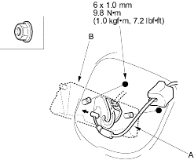
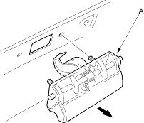
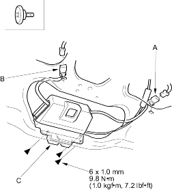

- Remove the tailgate lower trim panel (see page 20-209).
- Disconnect the tailgate opener cable (A) from the tailgate handle (B) and remove the nuts.
Fastener Locations  : Nut, 2
: Nut, 2

- Pull out the tailgate handle (A), then remove it.

- Install the handle in the reverse order of removal and note these items:
- Make sure the tailgate opener cable is connected securely.
- Make sure the tailgate opens properly.
With Security Switch
- Remove the tailgate lower trim panel (see page 20-209).
- Disconnect the tailgate opener cable from the tailgate handle.
- Disconnect the tailgate latch switch connector (A) and tailgate actuator connector (B), and detach them from the tailgate.
Fastener Locations  : Bolt, 3
: Bolt, 3

- Remove the bolts and pull the tailgate latch (C) out, then remove it.